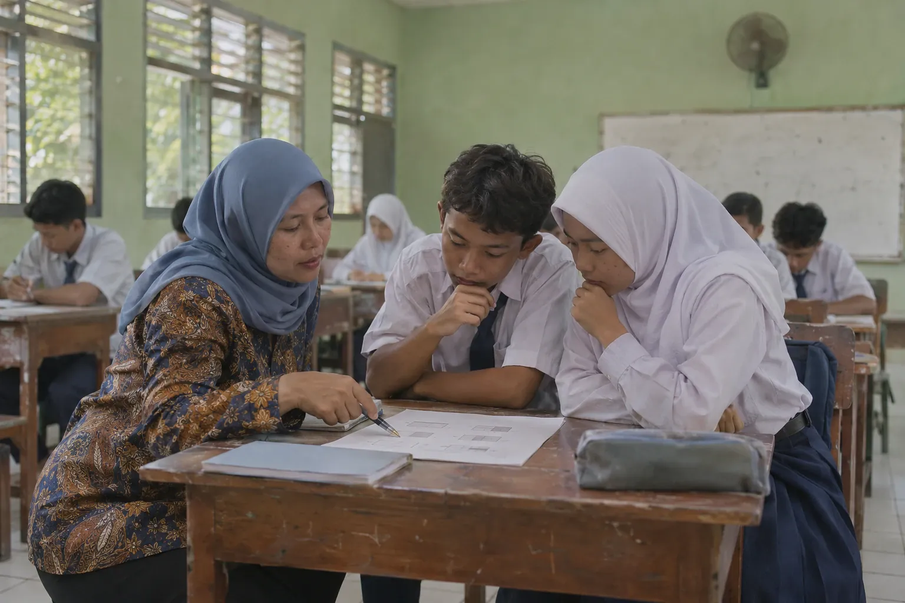
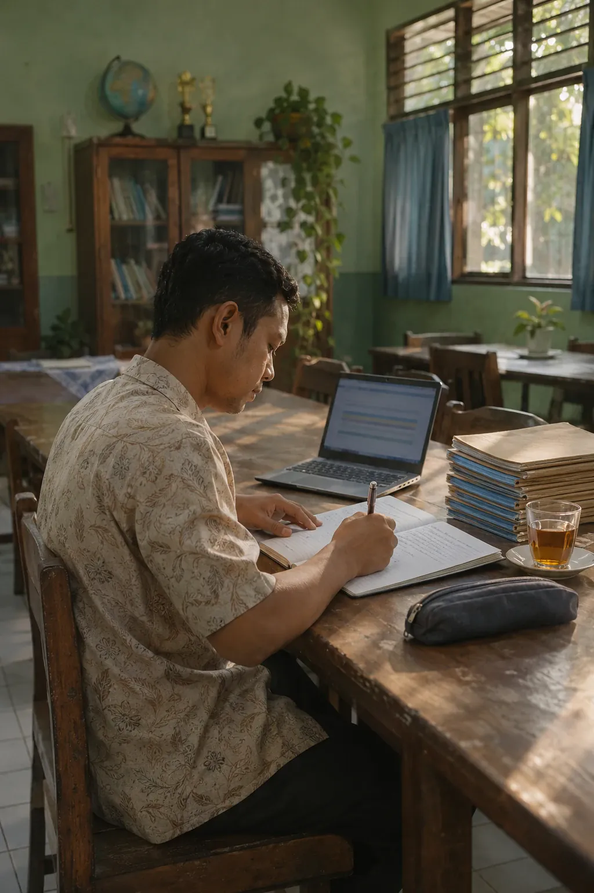
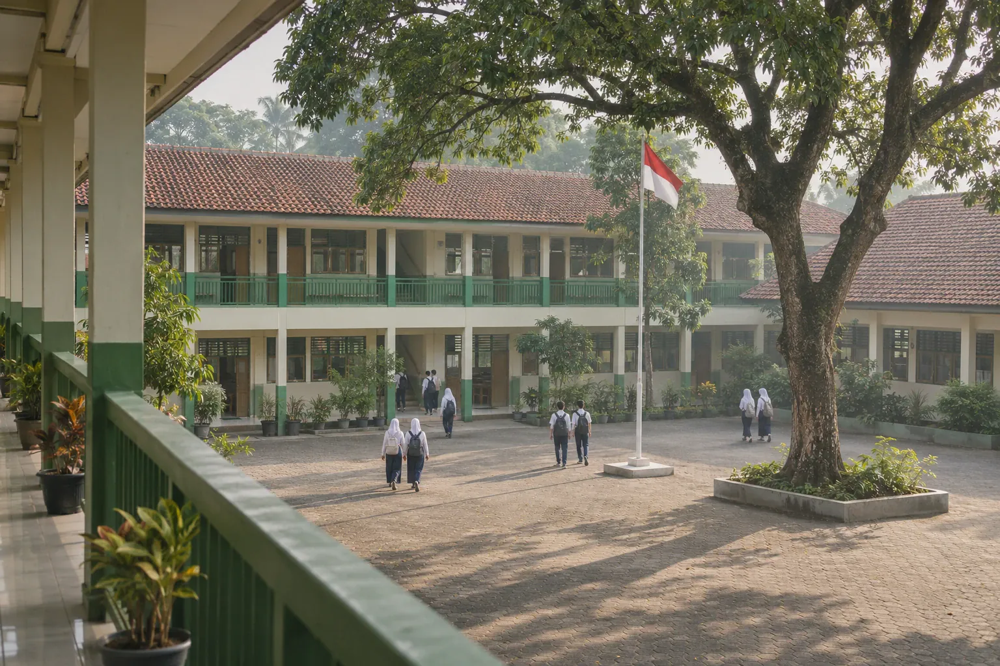

Evidence-driven education platform
A score shows the result. Understanding shows what to teach next.
PINTAR connects learning, assessment and reporting, so educators can understand progress and decide what comes next.
Mathematics · Fractions · Class 7B · Mastery Check · 24 learners
Learning objectives% of answers correct
- Finding a common denominator46%
- Comparing two fractions63%
- Simplifying fractions88%
The share of correct answers to each objective’s questions: 3 questions, 24 learners. It is evidence, not yet a judgement of mastery.
Evidence: the hardest questions
- Question 4 · common denominator7 of 24 correct · 12 chose B
- Question 9 · comparing fractions11 of 24 correct
Written by the educator · example
Judgement
Option B adds the denominators. Most of the class is not yet finding a common denominator before adding.
Next step
Tomorrow: revisit common denominators with fraction strips, then continue with comparing fractions.

01From evidence to decision
Understand what to teach next.
Every PINTAR report starts from a learning objective and ends in an educator’s hands.
- 01 Learning objective What learners should be able to do.
- 02 Evidence Answers from the Initial Mapping, practice and the Mastery Check.
- 03 Educator judgement The educator reads the evidence alongside what they know of the class.
- 04 Next teaching step What to revisit, for whom, and what to move on to.
02How it works
One cycle, from diagnosis to improvement.
Each stage produces evidence for the next.
- 01 Diagnose The Initial Mapping shows what learners already know.
- 02 Guide A Personal Reading Map suggests where to start reading.
- 03 Learn Lessons and practice, with step-by-step help when needed.
- 04 Assess A Mastery Check, with its rules shown before it starts.
- 05 Explain Reports explain the results, and say so when there is not yet enough data.
- 06 Verify Results trace back to the material and rules used; a certificate’s authenticity can be checked.
- 07 Improve Educators decide what to revisit and what to move on to.
- Back to the startwith new evidence, to Diagnose.

03Capabilities
What PINTAR does.
- 01
See what needs revisiting
Educators see mastery by learning objective and the questions a class found hardest, then decide what to do next.
- 02
Learn with a clear next step
Learners see their assignments and their next step, from the Initial Mapping to the Mastery Check.
- 03
Reports that are honest about the evidence
Reports for each role, without rankings. When there is not yet enough data, the report says so.
- 04
Write questions faster
AI drafts multiple-choice questions; an educator checks them and decides, and each question is still reviewed by a second person before release.
- 05
Organised material and accounts
Material is reviewed before release, and accounts follow people when they transfer, move up a year or retire.
AI assists. Educators decide.
04Who It’s For
Everyone sees what they need to see.
For schools, universities and training programmes. What each person sees depends on their role.
- LearnersKnow what to learn next, and see their own results.
- EducatorsSee which parts and questions a class found hard, and who may need help.
- LeadershipSee patterns across classes, with figures whose basis is clear.
- AdministratorsManage accounts, classes and roles in one place.
- Foundations and governing bodiesAn institutional learning record that can still be explained, year after year.

05Trust & Security
Calm on the surface. Rigorous underneath.
What people see is simple. Beneath it are access checks, separation between institutions, assessment integrity and a record of consequential actions.
- 01Identity and access
- 02Separation between institutions
- 03Assessment integrity
- 04Results that can be explained
- 05Account and institutional continuity
- 06Recorded actions
- 07Privacy
06What comes next
Growing with care.
Next, PINTAR will help interpret the evidence more deeply, then support educators’ growth and interventions that are measured.
Request a demo
See PINTAR at work.
A guided demonstration tailored to your role, using sample data.